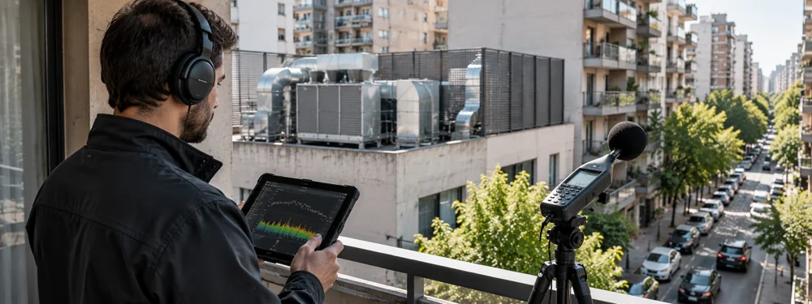
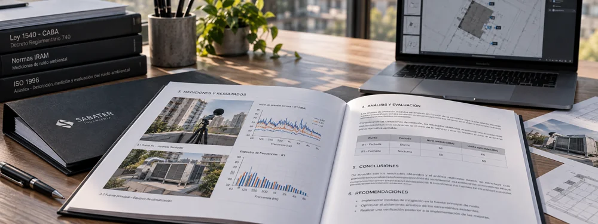

Reclamos por ruidos molestos
Conflictos entre actividades, comercios, industrias o viviendas donde es necesario evaluar objetivamente los niveles de ruido y su impacto.
Mediciones, evaluaciones e informes acústicos con respaldo técnico y normativo.
Contanos tu casoVer cómo trabajamos ↓Realizamos pericias en acústica, evaluaciones por ruidos molestos, Inscripciones RAC y Evaluaciones de Impacto Acústico, brindando mediciones, análisis y documentación técnica para respaldar trámites, reclamos, conflictos o decisiones profesionales.
Trabajamos sobre requerimientos vinculados a la Ley 1540 en la Ciudad de Buenos Aires y evaluaciones de ruido según IRAM 4062, entre otras condiciones normativas aplicables a cada caso.
En acústica legal, una medición aislada no siempre alcanza. Cada caso puede involucrar normativa específica, condiciones de medición, antecedentes, documentación técnica y la necesidad de que los resultados sean defendibles frente a terceros.
Por eso, antes de emitir una conclusión, es necesario comprender el contexto, definir correctamente qué evaluar y aplicar el criterio técnico y normativo correspondiente.
Conflictos entre actividades, comercios, industrias o viviendas donde es necesario evaluar objetivamente los niveles de ruido y su impacto.
Casos judiciales o extrajudiciales que requieren mediciones, análisis e informes técnicos para respaldar una posición o esclarecer una situación.
Actividades alcanzadas por requerimientos de la Ciudad de Buenos Aires que necesitan evaluación acústica y documentación técnica para avanzar con su inscripción.
Proyectos o actividades que requieren analizar su incidencia sonora y documentar técnicamente las condiciones existentes o proyectadas.
Situaciones en las que es necesario determinar la existencia de ruidos molestos mediante criterios normalizados de medición y evaluación.
Casos donde una autoridad, un profesional o una contraparte solicita documentación, mediciones o una respuesta técnica frente a una situación acústica.
Cuando una medición puede respaldar un trámite, un reclamo o una decisión legal, el rigor técnico deja de ser un detalle.
Abordamos cada caso a partir del análisis de la situación, la normativa aplicable y las condiciones reales de medición, combinando relevamiento, mediciones acústicas, evaluación técnica e interpretación normativa.
A partir de esa información elaboramos pericias en acústica, evaluaciones por ruidos molestos, Inscripciones RAC, Evaluaciones de Impacto Acústico e informes según IRAM 4062, con documentación técnica orientada a respaldar trámites, reclamos, presentaciones o decisiones profesionales.
Trabajamos con profesionales matriculados e instrumental homologado y con certificados de calibración vigentes, asegurando trazabilidad y validez técnica en cada intervención.


Del diagnóstico a una decisión
técnicamente fundamentada.
Relevamos el contexto, los antecedentes, el tipo de conflicto o trámite y la normativa aplicable para definir correctamente qué debe evaluarse.
Realizamos las mediciones necesarias con instrumental homologado y calibración vigente, registrando las condiciones relevantes para asegurar trazabilidad técnica.
Evaluamos los resultados según el marco normativo y técnico correspondiente, considerando las particularidades de cada situación.
Preparamos el informe, pericia o documentación necesaria para acompañar el trámite, reclamo, presentación o decisión profesional.
Cada intervención se desarrolla con criterios técnicos verificables, trazabilidad documental y aplicación del marco normativo correspondiente.
Más de 15 años de experiencia en ingeniería acústica aplicada a evaluaciones normativas, conflictos por ruidos molestos, habilitaciones y pericias técnicas.
A lo largo de nuestra trayectoria profesional hemos intervenido como peritos de oficio, peritos de parte, asesores técnicos y profesionales responsables, en situaciones vinculadas a actividades comerciales e industriales, edificios, viviendas, habilitaciones, reclamos, intimaciones y conflictos por ruido.
Esa experiencia nos permite abordar cada caso entendiendo no sólo la medición, sino también el contexto técnico, normativo y documental que la rodea, y reconocer rápidamente situaciones que ya hemos encontrado en otros proyectos.
Cada caso tiene particularidades, pero muchos de los problemas que llegan a nosotros ya los hemos visto antes.
Ruidos molestos · Pericias en acústica · Inscripción RAC · Evaluación de Impacto Acústico · IRAM 4062 · Habilitaciones · Reclamos e intimaciones · Asesoramiento técnico
Intervenimos en conflictos por ruidos molestos, pericias técnicas, Inscripciones RAC, Evaluaciones de Impacto Acústico, habilitaciones, reclamos e intimaciones, entre otros casos donde sea necesario contar con una evaluación acústica y documentación técnica con respaldo profesional.
No siempre. Una medición debe interpretarse dentro del contexto técnico y normativo correspondiente. Por eso analizamos cada caso considerando las condiciones de medición, la normativa aplicable, los antecedentes y el objetivo de la intervención.
Nuestra base operativa se encuentra en Buenos Aires, pero trabajamos en casos y proyectos de toda la región, contemplando traslados, relevamientos y actividades en sitio cuando son necesarios.
Contanos brevemente la situación. Podemos ayudarte a definir qué evaluar, qué documentación necesitás y cuál debería ser el próximo paso técnico.
Contanos tu caso¿Tenés un proyecto o necesitás resolver un problema técnico? Contanos brevemente la situación y coordinemos una conversación.
hola@sabater.com.ar ↗Buenos Aires, Argentina
Proyectos en todo el país.